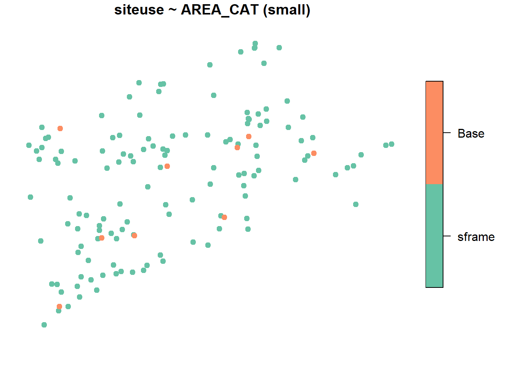
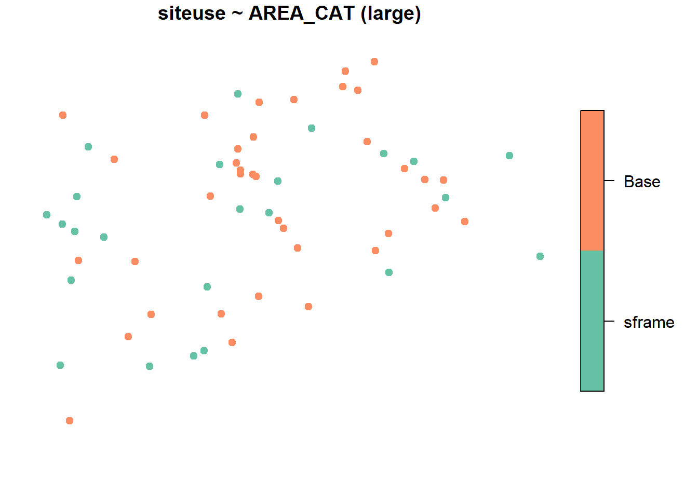
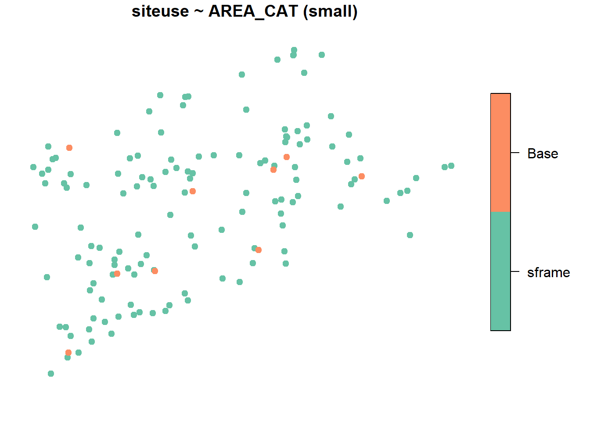
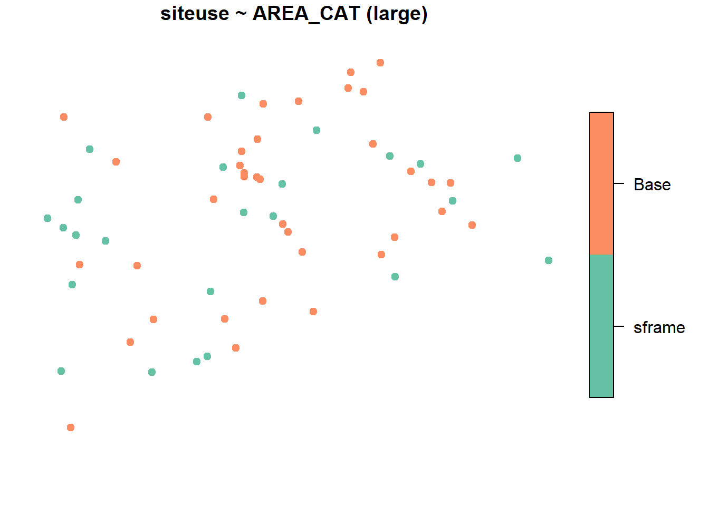
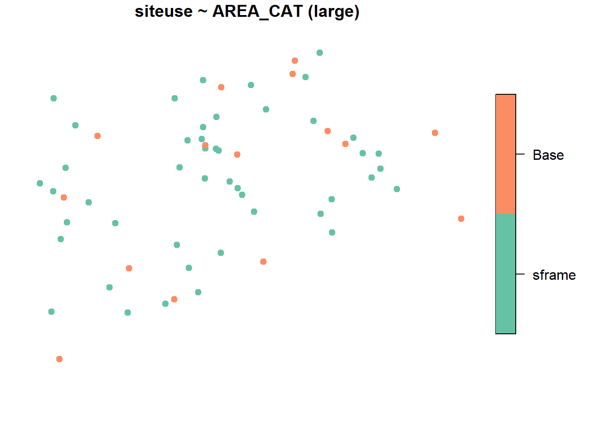
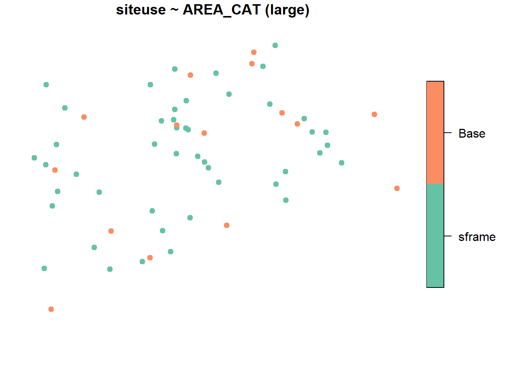

1 Designing a Survey
Define the Target Population In designing an aquatic resource monitoring survey, the designer must define what aquatic resource is to be monitored, otherwise known as the Target Population. For example, if the designer only has an interest in assessing the condition of perennial waters in a state, the target population is defined as perennial waters and intermittent and ephemeral waters are defined as non-target populations and are omitted from the selection process. The target population should align with your organizations monitoring strategy and objectives.
Select a Sample Frame of the Target Population Next, the designer must select a Sample Frame to use when selecting potential sampling sites. A sample frame is a GIS representation (e.g. shapefile) of the aquatic resource target population such as National Hydrography Datasets. In the example above, the designer will select a dataset which only includes perennial waters. This process often involves extracting a subset of a dataset which contains non-target resources.

Sample frames for NARS and states may differ due to different target populations, source material, and state knowledge leading to improvements. For partners to leverage NARS fully, requesting the integration of a partners sample frame can possibly be accommodated.

Once the target population has been defined and a sample frame of the target population has been selected, the designer can now prepare survey. The code below shows how a survey was designed using a population of lakes in the Northeast US. This sample frame is found in the package spsurvey and is not meant for use other than as an example.
NOTE To upload your own sample frame, you may use the code below to read a file as an sf_object which is required by spsurvey to design a survey.
#Load the spsurvey package
library(spsurvey)
#To view the NE_Lakes sf object which contains the target population
NE_Lakes <- spsurvey::NE_Lakes
#Plot NE_Lakes
plot(NE_Lakes,
pch = 19,
main= "NE Lakes",
key.width = lcm(3))
For a state scale monitoring survey, it is generally accepted that sampling 50 sites gives sufficient confidence when calculating condition estimates. This sample size can vary depending on the size of the sample frame. Below we prepare an unstratified equal probability survey in which all lakes in the sample frame have the same chance of being selected regardless of size or other attributes.
EQ_PROB <- grts(
NE_Lakes,
n_base = 50
)
plot(
EQ_PROB,
NE_Lakes,
main= "Base Sample Sites",
pch = 19,
key.width = lcm(3)
)Above, the plot displays the survey sites selected within the sample frame. Use the function spsurvey::sprbind() to obtain the information about each survey site.
## Simple feature collection with 5 features and 14 fields
## Geometry type: POINT
## Dimension: XY
## Bounding box: xmin: 1847206 ymin: 2264895 xmax: 2014028 ymax: 2418605
## Projected CRS: NAD83 / Conus Albers
## siteID siteuse replsite lon_WGS84 lat_WGS84 stratum wgt ip caty AREA
## 1 Site-01 Base None -72.19238 42.58750 None 4 0.25 None 3.928360
## 2 Site-02 Base None -72.01400 42.03126 None 4 0.25 None 16.846150
## 3 Site-03 Base None -72.98695 41.31769 None 4 0.25 None 1.761006
## 4 Site-04 Base None -71.33442 41.73572 None 4 0.25 None 6.185701
## 5 Site-05 Base None -73.21026 42.36524 None 4 0.25 None 1.346782
## AREA_CAT ELEV ELEV_CAT LEGACY geometry
## 1 small 291.81 high <NA> POINT (1921855 2418605)
## 2 large 157.83 high <NA> POINT (1951481 2361998)
## 3 small 69.09 low <NA> POINT (1893058 2264895)
## 4 small 1.74 low <NA> POINT (2014028 2344190)
## 5 small 561.41 high <NA> POINT (1847206 2374315)
#Creates an sframe object of northeast lakes found in the spsurvey package
NE_Lakes <- sframe(NE_Lakes)
#Plot NE_Lakes stratified by Area Category
plot(NE_Lakes,
formula = ~ AREA_CAT,
main= "NE Lakes by Area Category",
pch = 19,
key.width = lcm(3))
#Summarize NE_lakes by Area Category
summary <- summary(NE_Lakes, formula = ~ AREA_CAT)
propprob <- grts(
NE_Lakes,
n_base = 50,
seltype = "proportional",
aux_var = "AREA"
)
plot(
propprob,
formula = siteuse ~ AREA_CAT,
NE_Lakes,
pch = 19,
key.width = lcm(3)
) 

10 acres
#Create a vector defining stratified sample size
strata_n <- c(small = 35, large = 15)
#Select a stratified GRTS sample
STRAT_PROB <- grts(
NE_Lakes,
n_base = strata_n,
stratum_var = "AREA_CAT"
)
plot(
STRAT_PROB,
formula = siteuse ~ AREA_CAT,
NE_Lakes,
pch = 19,
key.width = lcm(3)
) 
